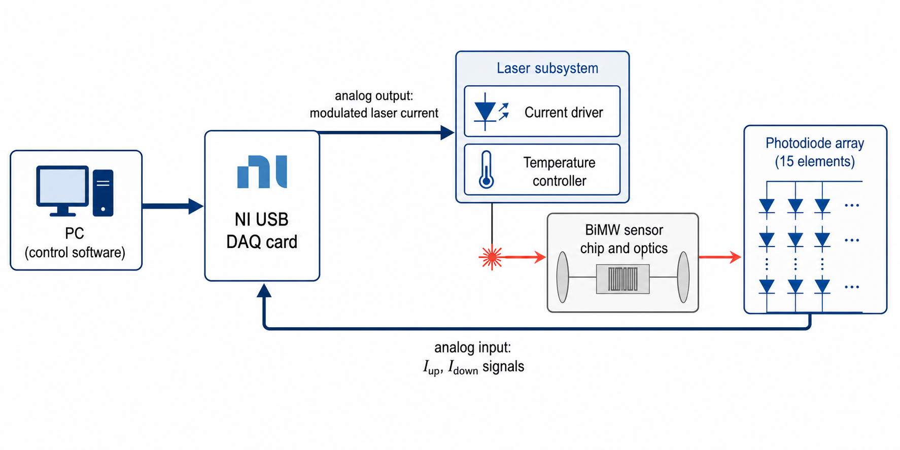
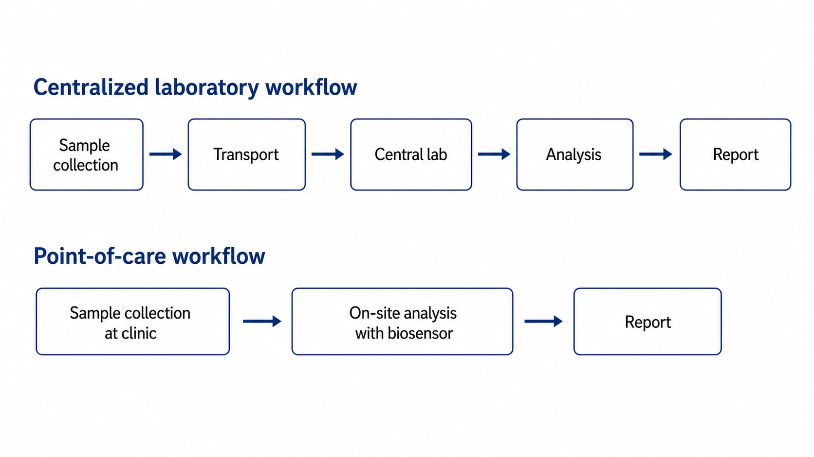
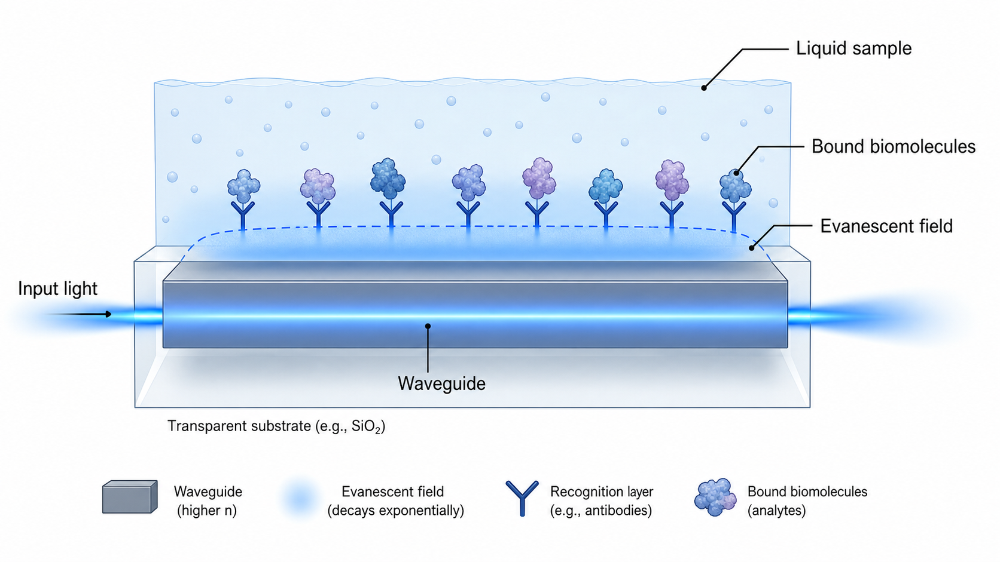
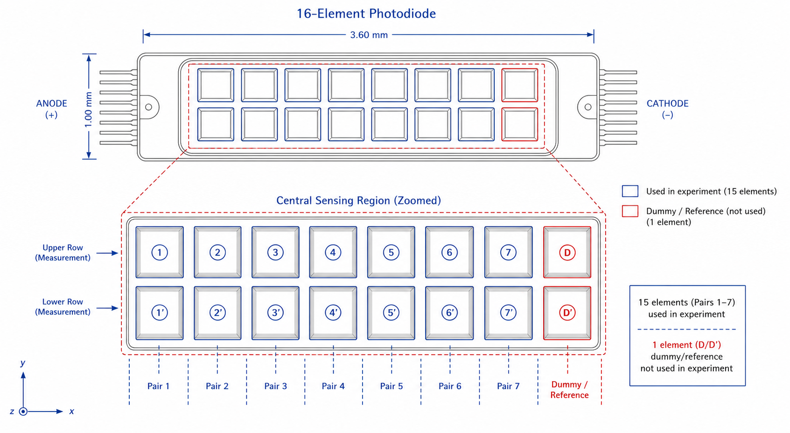
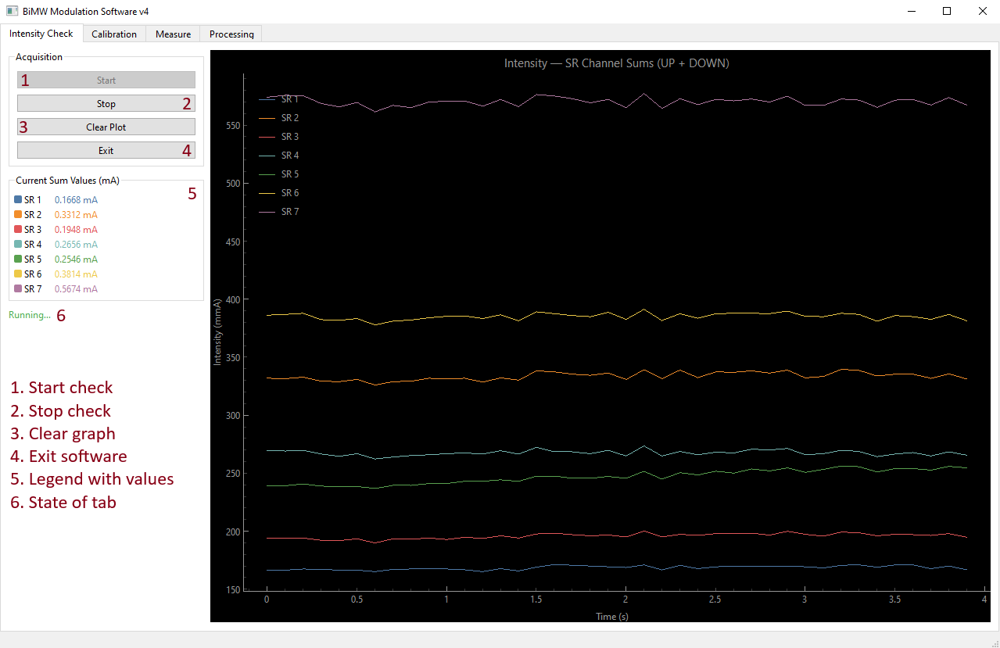
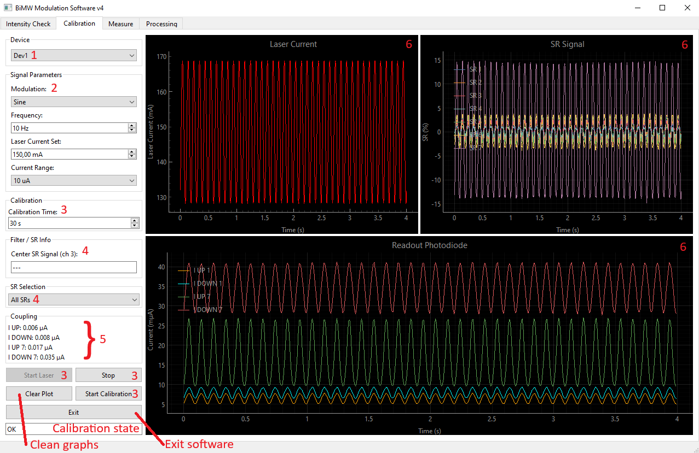
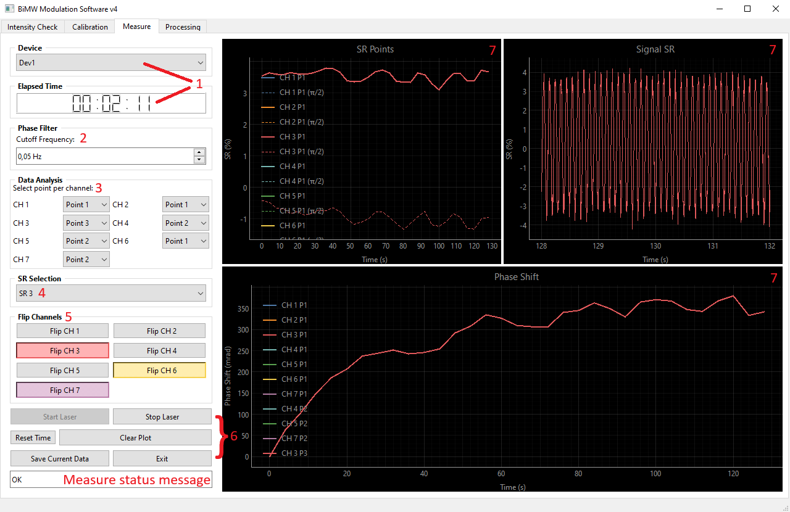
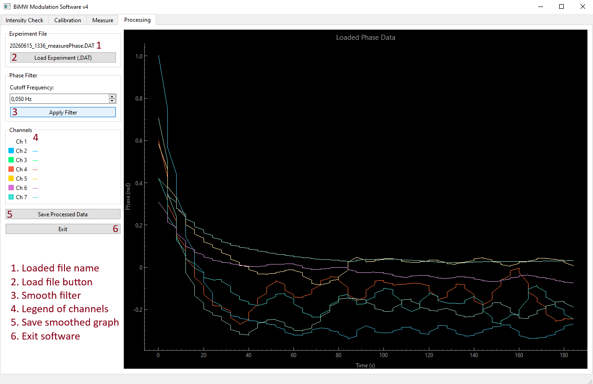
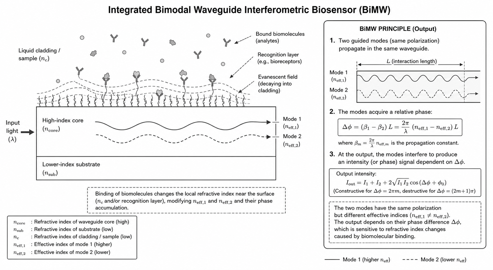

Hardware diagram
High-level diagram of the photonic biosensor platform, NI DAQ modules and photodiode array connections used by the software.
Design and implementation of a software interface for multiplexed biosensor control and analysis in clinical diagnostics, integrating NI DAQ hardware with a PyQt6 desktop application.
A thesis project bridging photonic biosensor experiments and software engineering: designing a control and analysis interface that is usable in real lab workflows, not just in theory.
The BiMW control software is part of a clinical diagnostics-oriented biosensor platform developed at ICN2. The goal of the project is to provide a robust desktop application that can orchestrate multiplexed experiments, acquire and visualise signals from NI DAQ hardware, and assist with analysis steps such as phase unwrapping and calibration.
Unlike a purely academic prototype, the interface is designed to sit in front of real hardware and real samples: it needs clear workflows, error handling, and an architecture that can be iterated on as the biosensor platform evolves.
This page collects the main documentation, diagrams, GUI screenshots and working notes for the project. The source code is private, but the structure and outcomes are documented here.
Diagrams describing the hardware path and experimental workflow, followed by screenshots of the main BiMW GUI views used during experiments.

High-level diagram of the photonic biosensor platform, NI DAQ modules and photodiode array connections used by the software.

Workflow showing how the application guides users through calibration, measurement and data processing steps.

Context figure for the bimodal waveguide biosensor technology underlying the BiMW platform.

Diagram of the photodiode array used for signal readout and its relation to the acquisition channels.

GUI screen focused on verifying connections, channels and baseline readings before running experiments.

Calibration interface used to align the system, record reference signals and prepare the biosensor for measurements.

Live acquisition panel with real-time signal plots and controls for the experimental sequence.

Processing screen where phase unwrapping and other analysis steps are applied to acquired data.

General image used in documentation to represent the BiMW control software within the broader platform.
Official reports submitted during the thesis lifecycle: initial report, progress reports, and the final memory.
Working notes used to steer the project, and key scientific references for the biosensor technology and diagnostic context.
These files capture meeting summaries, methodology drafts, to‑do lists and proposal text used to refine the thesis.
Core literature on bimodal waveguide biosensors, label‑free photonic biosensors and decentralised diagnostics used as the scientific foundation for the project.
The BiMW control software source code is stored in a private repository and is not publicly accessible. This page focuses on the architecture, documentation, visuals and outcomes of the project rather than the full implementation.
If you want to know more about this thesis or related projects, you can reach out directly or go back to the main portfolio.
This TFG page is part of one broader portfolio, which includes other projects such as my Japanese learning dashboard and web experiments.
Back to main portfolio